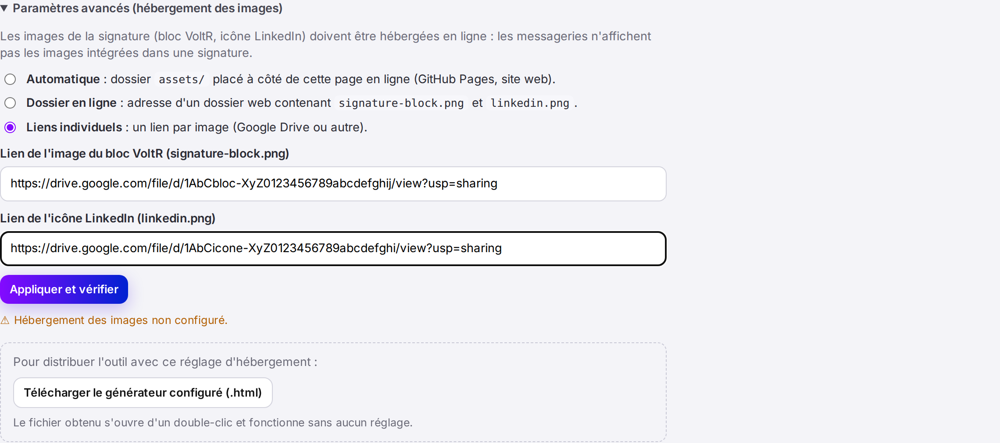
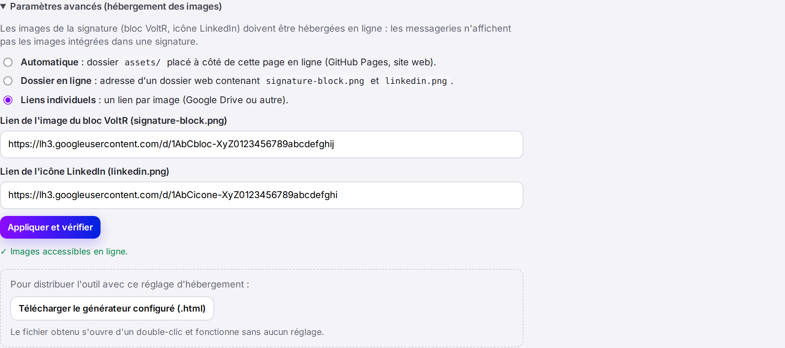

Générateur de signature e-mail VoltR · Tuto 2
Environ 10 minutes · sans site web · avec le Google Drive de votre société
.html à distribuer : un double-clic l'ouvre dans le navigateur, sans installation.VoltR-signature-drive.zip, un compte Google Drive, et Chrome, Edge, Safari ou Firefox.Décompressez VoltR-signature-drive.zip : double-clic sur Mac, clic droit › Extraire tout… sur Windows. Vous obtenez :
Generateur-signature-VoltR-a-configurer.html : le générateur, pas encore relié à vos images ;images, qui contient signature-block.png (le bloc violet VoltR) et linkedin.png (l'icône).https://drive.google.com.Signature e-mail – images.Ouvrez ce dossier et glissez-y signature-block.png et linkedin.png. Ne les renommez pas, ne les ouvrez pas avec une autre application et ne les convertissez pas.
signature-block.png › Partager › Copier le lien. Collez ce lien de côté (bloc-notes, e-mail brouillon…).linkedin.png.Un lien ressemble à https://drive.google.com/file/d/1AbC…XyZ/view?usp=sharing. Il faut bien le lien de chaque image, pas celui du dossier.
Generateur-signature-VoltR-a-configurer.html : il s'ouvre dans votre navigateur.signature-block.png dans Lien de l'image du bloc VoltR, et celui de linkedin.png dans Lien de l'icône LinkedIn.
Après quelques secondes, le message « ✓ Images accessibles en ligne » apparaît. Les liens sont remplacés par des liens d'image directs (lh3.googleusercontent.com/… ou drive.google.com/thumbnail…) : c'est normal, c'est la conversion automatique.

Generateur-signature-VoltR.html arrive dans votre dossier Téléchargements.Generateur-signature-VoltR.html contient déjà vos liens d'images : il fonctionne d'un double-clic, sans aucun réglage. Le fichier …-a-configurer.html ne sert plus qu'à refaire la configuration si besoin.Generateur-signature-VoltR.html, remplissez le formulaire et cliquez sur Générer vos signatures : aucun encadré orange « Attention » ne doit apparaître.Envoyez Generateur-signature-VoltR.html à votre client, par e-mail ou via un dossier partagé. Chaque utilisateur l'enregistre, l'ouvre d'un double-clic, remplit ses informations, clique sur Générer vos signatures et suit le guide de sa messagerie (Gmail, Outlook, Apple Mail, Spark, mobile).
| Besoin | Comment faire |
|---|---|
| Ne jamais faire | Supprimer ou déplacer les deux images, les mettre à la corbeille, ou arrêter le partage du dossier : toutes les signatures installées perdraient leur logo. |
| Remplacer une image sans casser les signatures | Clic droit sur l'image dans Drive › Informations sur le fichier › Gérer les versions (ou directement Gérer les versions selon la version de Drive) › Importer une nouvelle version. Le lien reste le même : les signatures existantes se mettent à jour. Taille attendue : 448 × 350 px pour le bloc, 48 × 48 px pour l'icône. |
| Les images ne s'affichent plus un jour | Google a peut-être changé son fonctionnement. Refaites les étapes 6 et 7 (l'outil teste plusieurs formats de lien) puis redistribuez le fichier. Si le problème persiste, passez au Tuto 1 (GitHub Pages). |
| Symptôme | Solution |
|---|---|
| Le fichier .html s'ouvre dans un éditeur de texte | Clic droit sur le fichier › Ouvrir avec › Chrome, Edge, Safari ou Firefox. |
| Le bouton « Copier » ne fonctionne pas | Essayez un autre navigateur (Chrome ou Edge recommandés), ou utilisez l'onglet Code HTML. |
| L'option « Tous les utilisateurs disposant du lien » est grisée | Votre administrateur Google Workspace l'a interdite : demandez-lui de l'autoriser pour ce dossier, ou utilisez le Tuto 1. |
| Le logo n'apparaît pas dans un e-mail reçu | Beaucoup de messageries bloquent les images tant que le destinataire n'a pas cliqué sur « Télécharger les images ». Vérifiez avec une autre adresse. |